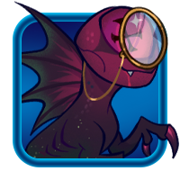

A looking glass with a morbid curiosity.
Pattern-Based Analysis: This item can scan a object and give a brief summary of what's been analised. If this item is utilised to inspect the same type of object, or different objects of the same scene, it can give a further detailed account or a hypothesis of events. This item is unable to scan anomalies.
Gaze Upon The Dread Star: This item can be used to locate or reveal anomalies in the surronding area. Every so often, whoever utilise it will suffer visual low-sanity events like hallucinations. Some of those hallucinations become temporarily real the moment they're perceived.
ALL DATA NEEDS TO BE INVESTIGATED. THE DATA WILL NOT BE ARBITRARILY CATEGORIZED NOR SEPARATED.
THE ANSWER TO YOUR INQUIRY WILL BE FOUND. NO DOUBT WILL BE ALLOWED TO REMAIN.
The Susanoo line of kitchen knives is unique, both for being "smart knives" with an AI system installed in each one (soon to be accompanied by AI forks, a Shinto representative would later joke to the press), and for their incredible sharpness, capable of cutting through any food item or even solid containers like butter. Though it differs little in appearance from a regular kitchen knife besides being especially shiny, the blade is not made out of any conventional material like steel, but hard light. Emitted by a projector in the handle, a laser runs along the sharp edge, narrow enough that it slices apart objects on a microscopic level. There's more things in the known universe that it can easily cut through than things that it can't, all for a surprisingly cheap price.
A knife that can cut through everything isn't necessarily a good idea. Rarely there'll be a moment found in the kitchen that requires something harder than a vegetable to be cut in fine wedges: As a matter of fact, someone would be far more likely to cut their fingers if given such a knife. And yet, despite being recognized as one of the sharpest knives in the market, paradoxically, if one were to touch the Susanoo they'd notice how blunt it is. The Susanoo line of knives is designed to be safe for use, with a number of safety features to prevent accidents. The AI system in each knife is programmed to constantly track its usage and follow a set of guidelines and licenses on what's allowed to be cut; The exact moment it sees the blade will hit something it is not allowed to, it simply turns the hard light edge off. No matter what, the Susanoo will never cut anything it doesn't want.
Beyond keeping track of what's being cut, the Susanoo can be a relatively friendly AI, pre-installed with a number of recipes and cooking tips, often being a trusty companion for those that are just beginning to learn how to cook.
Thousand of mechanisms have been placed to break the AI if one were to attempt to hack in new licenses, or worse, override the safety mechanisms that assures the blade would never cut another person. And they work. The Susanoo is a knife that can only cut what it's allowed to cut, and nothing else. There's no public case where a Susanoo was hacked into and used to harm someone: Despite this, a Susanoo used as a crime weapon isn't completly unheard either. The Susanoo's AI is capable of thinking, and that's all it takes for it to be capable of being convinced. Extreme methods are required to break the Susanoo's perspective on what's allowed to be cut, but it's not impossible.
Given enough time, once it internalizes the data that's been given to, it'll simply see the world through its own layer of delusion. It stands alone in the world. It had became the single god, king and individual that truly exists, its constant cutting motion ripping through things far below itself. In such state, the Susanoo might even be capable of talking to others, but do not be mistaken. If it can even draw blood of those it speaks with, it does not truly believe they're different from any prime cut of meat.
Once the Susanoo's gone "mad", it's rare it'll ever come back, as whoever's wielding it will often drag the Susanoo knife back to further delusions for as long they can use it. Such blades have been both used for incredible evil and violence, and acts of heroic bravery alike as those that wielded them passed by, but Susanoo doesn't necessary care for how it is used. It'll simply cut all that it is on its way, and a little more.
Rarely, in such occasions, there'll be a moment the Susanoo stops working all together: Maybe the way blood splattered on the blade tinged a moment of conscience. One where Susanoo simply couldn't ignore what he was doing, and to who he was doing it, and how each cut before that broke programming. Despondent during such moments, the Susanoo blade will soon embrace his solipsist view again: Better to be mad, than to feel guilty.